Mr World-Wides
Yusuf Akyavas - https://yusufakyavas.github.io/
Hello! My name is Yusuf Akyavas and I am a current student enrolled in the Bachelor of Information Technology degree at RMIT. In this course I am a part of the course group “Mr. World-Wides". I was born in Australia and have lived here my whole life, though I have also gone to some other places both here in Australia and abroad. I graduated from high school at Sirius College mostly in mathematics and sciences and I can speak English and Turkish. I enjoy spending time with friends and that is usually done through playing video games either in person or online. My interest in IT started when I was young, I would watch my brothers on computers and other consoles and was amazed and interested in technology. Though my real interest only began nearing the end of high school due to the pandemic. The pandemic forced me to use computers more so I decided I wanted to do something related to IT. I chose to go to RMIT as my oldest brother graduated from RMIT with an IT degree. I currently have some experience in programming languages of python and the language of SQL as well as an understanding of HTML and CSS. These are my skills as of now, I hope to further develop them throughout my career. I hope to broaden my skills and learn a range of knowledge which would be used to help people in the field of IT.
Myers-Briggs
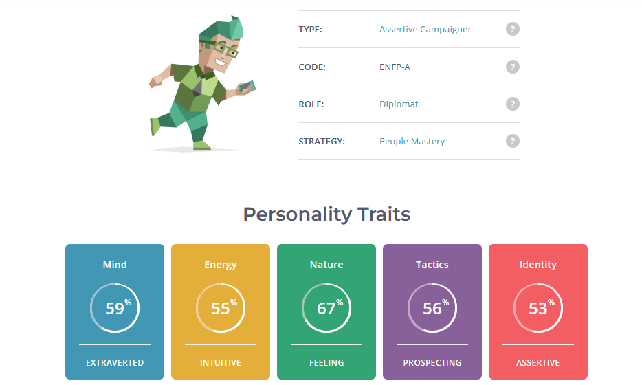The results indicate that my personality of being assertive, sociable and extroverted means that I will be able to get along with and work well together in a team. I will be able to clearly articulate my ideas and thoughts to my teammates and will be able to listen and provide opinions to theirs. I will strive to keep a positive outlook when working in a team and work to complete tasks with my co-workers and build connections not only in a professional manner but also on a personal level so that I may work better in the team.
Learning Style
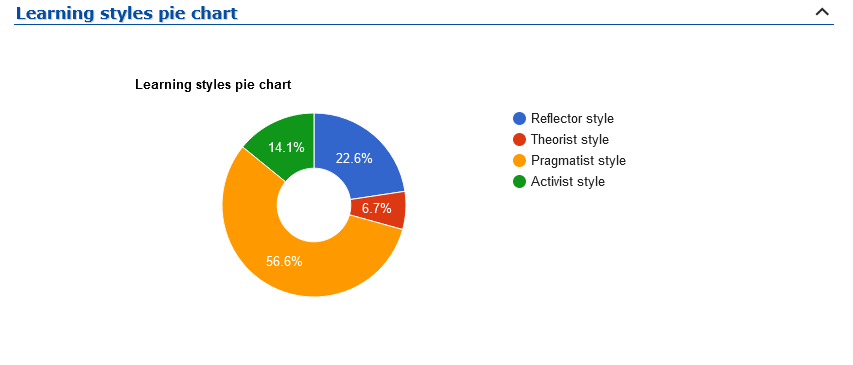Big Five Test
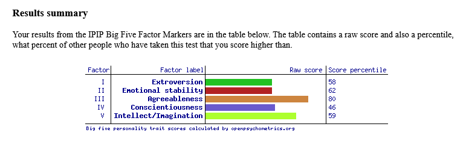
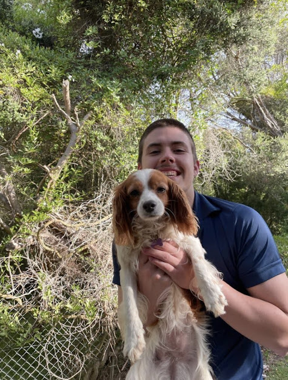

Hamish Dean-Graham S3932237 - https://hamishdgx.github.io/IntroIT/
My full name Is Hamish Dean-Graham with my student number being s3932237, I have lived in Australia my entire life and have a deep interest in technology mainly being backend and legacy applications. My hobbies include messing with old computers, going to the gym and baking. I am interested in IT because I grew up around it constantly and for experience, I have been working in the industry for the past two years as a DevOp intern which then transitioned to an operational engineer grad. I am part of the sickest dudes. IT appeals to me is because of how much I have been exposed to it. My family founded a Telecommunications billing software development company, and for the past 2 years I have been working there as a "Devops Intern" which then transitioned into "Operational engineer grad" So I have been extremely lucky to already be included into the field of IT and experience what the industry is like. After seeing many people at the company, I work at come from RMIT with lots of valuable skills not only with the software but communication/business skills I decided to transfer from my Swinburne computer science course to IT in RMIT. Especially with classes going back on campus I am excited to have a full university experience and hope to bring my extroverted nature into my IT work.
Myers-Briggs
Although I may not see myself as very assertive, I can be when necessary because of my extroverted Ness; I feel that the results especially with the Myers-Briggs test will have me presenting a lot and potentially making decisions. Alongside the fact that I am not very creative (based on my creativity test) will mean that I will rely on others for the creative aspect
Learning style-test
matrix.edu.aulabelled as a physical learner
"You're a physical learner! You prefer to use your body, hands and touch to learn new material. You need to apply the information and make it your own by making something, role-playing or practicing the technique/skill. You often memorise material when walking and observing, you like to engage in 'hands on' and interactive activities, and learn through doing. "
Creativity test
56/100 on creativity
- Risk: 23/26
- Curiosity: 13/24
- Complexity: 11/26
- Imagination: 9/24
- Overall score: 56/100
Jet Cronin - https://jetcronin.github.io/IntroToIT-Assesment-1/
I am a recent highschool graduate from Albert Park College from which I graduated in 2021, my studies focused on the sciences and music. I have lived in Melbourne, Australia my whole life but have traveled around Europe and some parts of Asia but am only able to speak English. I have interests in music and have a background with music production and the music industry but my passion for music lies with the metal scene with much of my time spent searching for new bands to listen to. I also have a deep appreciation for the sciences, specifically astronomy and I always enjoy keeping up to date with the latest studies and papers surrounding this topic. My interest in IT began when I was exposed to music production and the technology used. I was intrigued by the way the devices communicated to each other and how each plugin worked and learned how AI is used to produce effects and its uses in things like autotune. This progressed into researching AI in the music industry and its progression with many recent machine learning and AI programs being developed to produce its own music though this is still in its infancy. With my interest in space I was also intrigued by how astronomers research the universe and have interest in the systems used to discover and catalog extra terrestrial bodies using AI and machine learning. Despite being interested in these systems I have little IT experience outside of basic research. My decision to come to RMIT was influenced by my family as some recommended that RMIT was the university that was best suited for me. I started looking into RMIT’s astrophysics course during an open day but found myself drawn towards the computer science and IT departments and decided to further look into what I would learn through the IT related courses. I was impressed by the environment in RMIT and was encouraged to go by those around me to pursue an education here. During my studies I hope to develop the skills and understanding in security systems, AI and machine learning and expand my knowledge with IT systems. I wish to understand how AI and machine learning systems are developed and how they are influencing how we use computers. I want to understand security systems further and develop an understanding of the importance of such systems.
Myers-Briggs
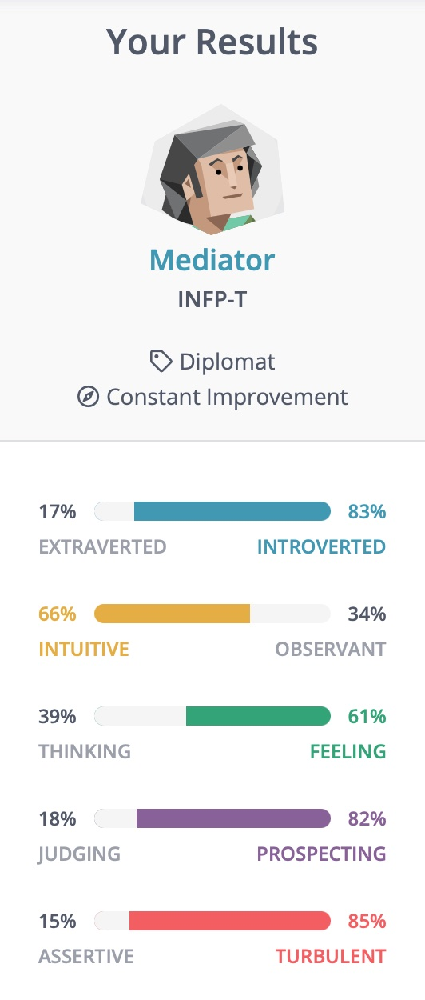Mediators would work well within a team as their affinity for helping would allow them to get along with a team despite their introverted Ness, working closely with a team will allow for others to help support with the unrealistic goals and expectations within a project as well as help motivate them to focus within their work. When forming a team, things to consider is that a mediator will likely take time to get to know the team, but will likely get along with most.
Learning Style
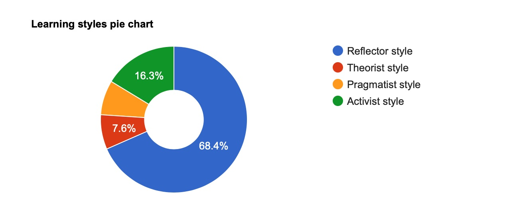Big Five Test
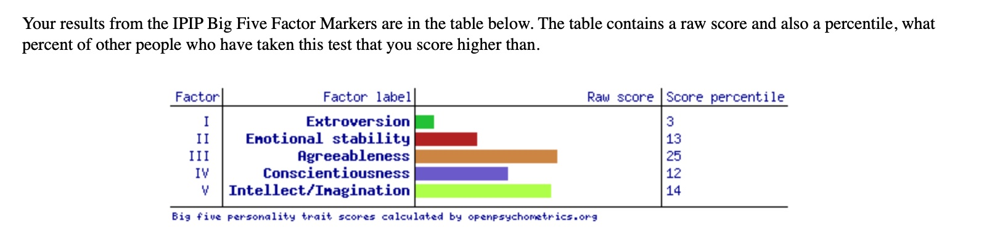
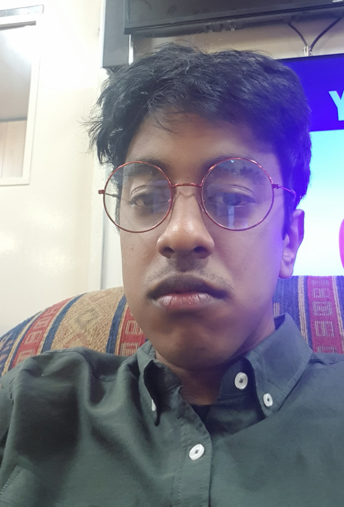


Shivam (Oliver) Raju - https://gattlegun.github.io/IIT/
Hi, I'm Shivam [s3953555(@student.rmit.edu.au)]! I come straight from CDSC (Carrum Downs Secondary College) doing my VCE in music, media, software development, and math. My family comes from Fiji with Indian heritage but I myself was born in Australia. I’m fascinated by the social scene surrounding music rhythm games and it’s basically all I immerse myself in outside of responsibilities like school and general living. I’m not that interesting of an individual as I don’t pursue much but the things, I do indulge in bring me great joy and the only thing I could want is to be able to express my joy and sentiment to others! I try and do this through amateur photography and music production and I’m having a great time having fun. I’m super interested in computer vision technologies like photogrammetry, volumetric capture, object recognition and other fields like sustainable computing and low end/retro systems. I think it’s very important to retain the idea that computer systems are just an extension and a tool for people to use and this sentiment was very clearly conveyed with older retro technologies. I got interested in IT from a very young age - we didn’t get internet in our household until midway through my year 10 (2019) and I lived very far away from my friends, so I killed most of my time by watching TV and messing with a laptop. You can't do much with a laptop without internet and so I tried to find new things to do locally every day, this in my reading the offline manuals for windows and built-in software though - and through that I just became knowledgeable on computer systems and became the “computer guy!” The most thorough experience I have is my Applied Computing and Software Development classes for my high school VCE, I learned a lot about Visual Basic and .NET technologies. In my own home though, I like to experiment a lot with the things I have laying around, like old game consoles or anything slow that I think get a little bit more out of. I have some experience in bootleg networking as I host my own web server at home! I’m not too confident in networking as it’s an entire beast but I do have DD-WRT on my router (custom firmware) and I managed to get my home server point to a public domain. I also run arch Linux at home and that just brings its own maintenance headaches alongside it, but I think it’s a very fun project. I wanted to go to RMIT because of a couple different factors. Most IT/CS degrees are alike, but RMIT was the only one that stood out from the others, the third year of the degree offers industry experience and that seems like a valuable opportunity! The campus and community here were really alluring and being from the suburbs, I wanted to experience the hustle and bustle of the city, there’s just so much here! I’m finding niche communities that I could never see or expect from my local area. IT is such a broad field and there’s just so many smaller sections inside of it, so I expect to learn about just how many different fields are related to IT. I want to get really experienced with computing and problem solving and see how others from the past have tackled problems. I want to see what the industry is currently trying to achieve and how it’s taking the steps to solve those problems
Myers-Briggs
Being an ENFP means I have to more carefully consider others' ideas and offers as I might overlook something potentially disastrous and compromise a mission plan or fall being on a group timeline. I can find it hard to engage with monotonous practical tasks and lead a project to be disorganized and so I need to find someone who can counterbalance me and can catch me where I fall and where I can fill in for them. According to this scale this type of individual would be an ISTJ-A, a direct and dutiful type of person who acts according to reason and logic, keeps to their word and stays responsible. As previously mentioned, I may have tendencies to lose track of what duties I must do to make the person in front of me happy, an ISTJ would help me keep on task and focused on what is the most important and effective thing to do. Just as the ISTJ can help me with my downsides, as a ENFP, I can counterbalance them. An ISTJ may be more rule and guideline oriented and may not work well together in a team, enforcing an environment that puts people on edge rather than relaxed and comfortable. Maintaining a good social environment allows for better brainstorming sessions and more creative innovative ideas and I can help produce these conversations that an ISTJ may have trouble instigating. If the ENFP and ISTJ try and engage with each other instead of acting as counterbalances, however, trouble may occur as the contrasting types may cause conflict and frustration to both parties
Learning Style
Big Five Test
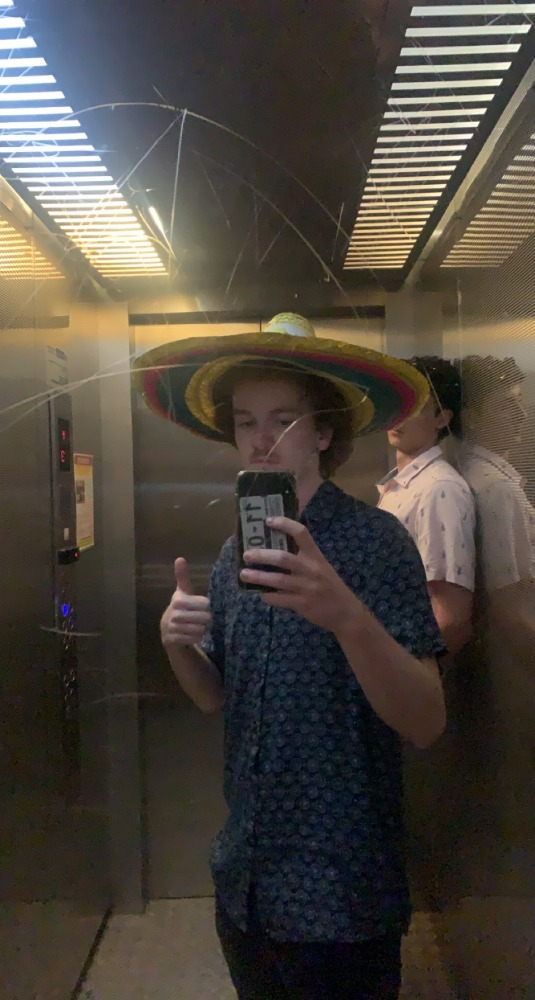
Nick Heeps - https://nick-heeps.github.io/The-profile-of-Nick-Heeps/
Hey, my name is Nick. My student number is s3944165. I am a new student here at RMIT and I’m currently studying for the Bachelor of Information technology, and I am on campus 4 days a week (Monday, Tuesday, Wednesday, and Friday). Even though my whole extended family lives in Melbourne I only moved here this year. I originally lived on a farm just outside a small town called Barnawartha. I have a lot of hobbies, but my main ones are building computers, gaming, and listening to music. My interest in IT began when I got my first PC in 2016 for my birthday. Ever since then I have had a strong interest in the physical and hardware side of IT. I’ve had a medium amount of IT experience, both within school and outside of school. In year 10 and year 11, I undertook data analysis and computing as an early start year 12 subject. I also participated in work experience at MARS Petcare where I worked with the IT department for two weeks handling small tasks and jobs so I could get an idea of what it was like to work in the IT field. I chose to come to RMIT because of the extensive and well-structured IT and computing courses that they had in place, allowing for me to pursue my interest in IT no matter what ATAR I got after leaving school. I expect to learn all about the different areas of IT throughout my course, not only to help me find a job when I’m older but to also build on my skills to use in everyday life.
Myers-Briggs
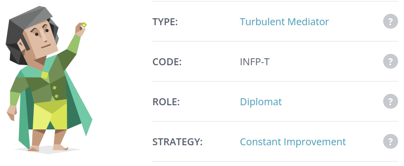These results for me, I think ultimately, show me what my strengths and weaknesses are and really simple details while also suggesting how I can improve on them. For example, my creativity test outlined that my creativity was a work in progress and stated that I should “Share your ideas and perspectives with others and ask them how they view problems. Adopt a collaborative approach to problem finding and work actively with others to create and innovate.” This pushes me to be more involved within a group setting. Which I think closely relates to my other test results that stated that I had a more introverted personality and should explore the extroverted side of things. I think these tests will influence my behavior within a team as I will be aware of how I function towards others and myself. As I am more introverted, I may find it a bit harder to put my own inputs into the group, but once I feel comfortable around them and can open up, I know that I would be a good asset to the team. It would be better that I am in a team that isn’t all exactly like me, because that way I would be able to learn how other people work in group settings and also learn how I work in different group settings. If everyone was introverted, it could be hard for things to get done properly without good group communication, whereas, if there a few extroverted group members, it would be easier for me to feel comfortable as it would boost my confidence when others include me.
Learning Style
Big Five Test
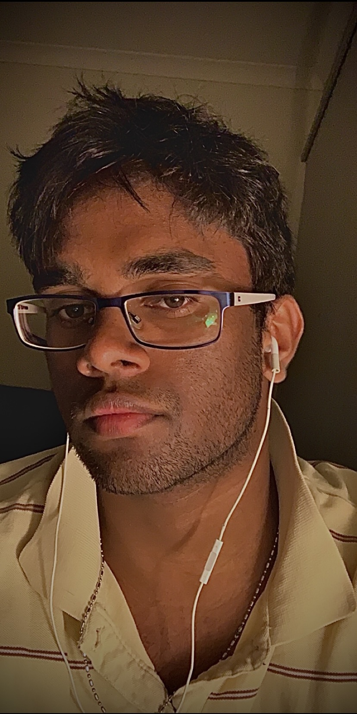
Aaron Schokman - https://aaron-schokman.github.io/Personal-Profile/
My full name is Aaron Denham Romel Schokman. I am a first year at RMIT currently studying a Bachelor of Information Technology (IT). I originally moved to Australia from Sri Lanka around 6 years ago (I was 13 years old at the time). When I moved to Australia, I studied for 2 years in Westall Secondary College, and then moved to Lighthouse Christian College in Keysborough (where I currently live). I graduated from year 12 VCE last year (2021) and am currently pursuing a career in Software and Systems engineering. I enjoy gaming as a past time, I’ve been a gamer ever since I was 6 years old. While I was a gamer, I also enjoyed Basketball and Swimming, and became very successful competing against other schools and clubs and winning multiple awards and trophies along the way. My reason to pursue the IT industry is because I’ve always had a passion towards computers and what helped them run and complete such complex tasks, which was further ignited by my passion for gaming. Alongside gaming, I used to work for McDonalds during my Highschool days, but once I graduated from VCE, I worked on the maintenance team of my alma mater (Lighthouse Christian College), I only worked on the maintenance team for a few days, but I gained invaluable experience in that field. Once I found another job at Premier Auto Trade (PAT) I worked there for a good three months during the Christmas break. My interest in IT is to be able to program and create a unique perspective into the world of Technology for myself, as well as others in areas such as game design or game programming. My interest in IT began when I played my first game of Call of Duty when I was 6 years old, and as a kid I have always wondered how a video game was created and what the inner workings of a video game are. Supposedly that interest in how a video game runs has carried on throughout my life. At the time, most of my uncles and cousins were enthusiastic gamers too, my passion for video games came from them, but my interest of the inner workings of a video game is purely my own.
Myers-Briggs
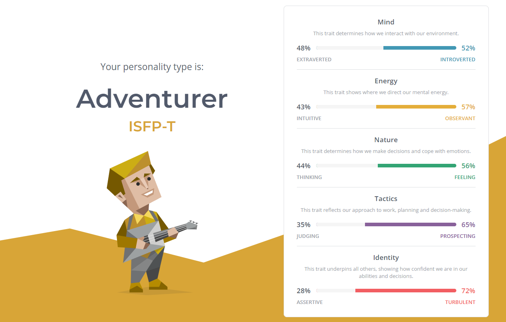As shown in the results, my Myers-Briggs test demonstrates that my personality type is ‘Adventurer’. What this means is that I mostly keep to myself, but I am not afraid to go outside my comfort zone and experience new things and challenges. What this means to me in terms of my behaviour in a team setting is that I will be very observant in group projects or activities. But I would be introverted meaning, that I wouldn’t be communicating as much as I should or. In terms of my nature, the Myers-Briggs test indicate that I make decisions based more on my emotions than thinking, which could be a positive or negative thing. Additionally, when I consider all my personality traits and attributes when forming a team, this would mean that I would need my team members to be similar in aspects such as identity(turbulent) and tactics (Prospecting) but different in nature(feeling), energy (Observant) and mind(introverted). This is because in order to work collaboratively as a team, we must share some similar attributes of some areas of our personality, and some different aspects in order to complete and tackle the task or goal.
Learning Style
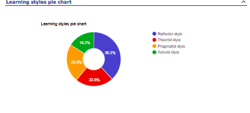Big Five Test
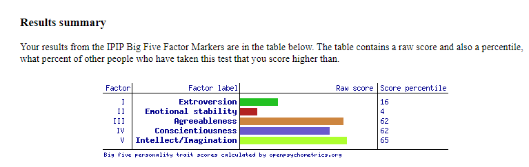Group Processes
Our group learnt a lot through assignment 2, especially regarding time management and reliance on others. This was through understanding that things never go perfectly. Especially in university many of us have jobs and other commitments that can sometimes be unpredictable and working around those obstacles to complete the assignment, even if that meant communicating that you could not get your delegated work done on time and having someone else step up.
On a more positive note, we found that eventually everyone does get their work done and that our group was quite good regarding quality of work and effort put into each assignment. Which gave everyone in our group a sense of trust and support. This resulted in easy delegation for assignment 3 with everyone happy with roles quite early on. Regarding feedback from assignment 2 and even from assignment 1, after discussion in class we realized that certain members aren't as good at nuanced descriptions; for example, Hamish did a lot of the content for assignment 2 in the technical areas and a lot of the feedback received from those areas was about how it was too complicated and not nuanced enough. So, when considering delegations Hamish was put into more heavy content areas that do not require high technical responses to highlight other group members' skill in writing.
Career Plans
Hamish:
My career plan has not changed since assignment 2, I Still want to be a back-end developer mainly focusing on legacy applications. The only difference that is made is that I doubt I will want to go into specialization of cybersecurity but more to implement into architecture design and dev-ops work. So still focusing on Cloud security Dev-ops role as my dream job.
Yusuf:
Nicholas:
Aaron:
Shivam:
My career plan has changed since assignment 2, shifting from being an infrastructure engineer to becoming a full stack developer in web development. Entering the degree, I thought I would be suited to backend work but after completing a semester of work in a range of subjects, I have found great joy in completing both frontend and backend work. Identifying the functional requirements of a problem and brainstorming the different pipelines it takes to achieve a solution, from a user centered design perspective considering how a user interacts with an application to a technical infrastructure engineer perspective figuring out the necessary software stack to produce work. It has turned out to be great amounts of fun for me and I’d love to spend more time problem solving in the IT industry.
Tools
The tools used to complete this assignment are:
- Microsoft Teams
- Word Online
- Communication
- GitHub
- Git
- GitHub Pages
- GitHub Organizations
- Figma
- HTML5, JS, CSS
- NodeJS
- 'OpenLayers' via NPM
- Maptilers
- OpenStreetMap
- Heroku
The deliverables started being produced in Figma before any sort of development, to solidify the main functional requirements of the problem and to idealize how a user would interact with the platform. Nick and Shivam started by paper prototyping ideas for how the UI would look and flow from one page to another and after individually coming up with concepts, the duo sent each other concepts to compare and create a final concept that combined the best aspects of both designs. They then moved onto creating a prototype in Figma. This choice of platform was used as both team members had previous experience using it and allowed for live demonstration and editing quickly and easily through the web app. The initial mockups were adjusted to fit the standard desktop size specified by Figma and the frames were divided equally amongst Nick and Shivam to work on. The first frames that were worked on were the herb index (Shivam), the herb details overlay (Shivam), and the herb map (Nick). The prototype makes heavy use of Figma’s component properties, overlay utilities, and in-house interactive prototyping – allowing the team to develop the prototype to look and feel exactly as if it was a functional app. It features a strong core color palette of white, green, and blue to be easy on the eyes and communicate the ‘earthy’ essence of the platform. Due to the sheer number of herbs that exist in the world, the team agreed that instead of having a single scrollable page vertically stacked with herbs and all its details, it would be better to show a list of herbs and have the details display in an overlay. Having an overlay means this frame can be reused in other screens such as clicking on an herb on the herb map.
After the Figma design prototype reached the state of being a minimum viable product, the team started to move onto producing a real-world functional prototype. We tried to consider the interests and skills of the team and assigned Shivam to be the lead developer of the prototype. With his deep interest in learning web development, his recently changed ideal job of Full Stack Developer, and previous programming experience meant he was a great fit for the role. Progress was started locally by scoping different map API’s and seeing how realistic it was to implement into the project, it was decided to use the OpenLayers (OL) library using OpenStreetMap as a map tiler as trying to implement the map through Google Maps required billing information through the Google Cloud Platform (GCP). No-one on the team was well-versed in GCP and so we didn’t feel comfortable proceeding as an accident could result in a large bill. Shivam worked on a demo that drew a map to a div so it can be used in any scenario, drew a marker and had a popup feature to demonstrate how the map screen would function, this was then immediately pushed to a fresh repo on GitHub so the team could track progress and make additional commits if needed. An issue arose where that only one marker could be drawn at a time due to how the marker system was implemented so Shivam worked on a system that stored co-ordinates in an array and made a function that iterated over each coordinate in the array. The existing popup system at the time did not differentiate between a click on the map and a marker. After going through the documentation on how to implement this, it turned out the marker implementation was again not ideal as it used OL's marker layers. The solution to this issue was to use a vector layer, as they have a multitude of methods to identify individual markers, so the marker system ended up being refactored in one commit to include both the vector implementation and array system. After this marker refactor, Shivam started to work on implementing the unique popup when clicking on a marker, we used an if statement nestled in a click that used OL’s ‘forEachFeatureAtPixel’ function to identify if an item drawn on a vector layer was found on at the click position and that if so to create a popup with a description of the location found in the co-ordinates array, otherwise display a generic popup that displayed the co-ordinates of where the user clicked. This final feature addition formed the pathway to the minimum viable product as all that was left was to create a frontend that wrote to the appropriate arrays and formatted the UI to look aesthetically pleasing.
Regarding the website to display content for this assignment, it was extremely like assignment 2; with the use of GitHub Pages to host the website and using HTML, CSS and a little bit of JavaScript for usability enhancements. These enhancements include a collapsible div for content on the website, this was implemented to remove clutter and shorten the length of the website as there is a lot of content. Most of the CSS is just for colour enhancements, font changes and borders to make the website easy to read while fitting a specific theme. All these technologies together create an easy to read and usable website for all to read. In order to collaborate on the creation of this website it was created using a GitHub Organisation along with the prototype.
The audit trail seen on the Git repository does not accurately represent the throughput of the group workload. Much of the group work is completed on platforms not synced alongside the git repository (Figma, Report Writing, Project Analysis, etc.) and as such, cannot be said to accurately represent the process of the group working. The Figma prototype is an excellent example of this, it is an entirely separated web application used for wireframing and design mockups and does not have any sort of local save file that can instanced to git for version control, furthermore, the main utility of Figma is how many users can collaborate on aspects of a project simultaneously – a use case that isn’t Git’s strong suit. (maybe another example of non-representative work in git here). However, there are sections of the project that are well documented on git through its audit trail and version control system, for example – the GitHub pages site.